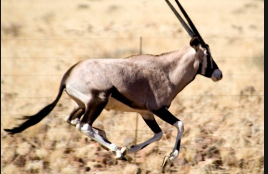

El órix cimitarra es un antílope que vive en las regiones subdesérticas del Sahel, al sur del Sáhara, aunque antiguamente su área de distribución llegaba mucho más al norte. Esta especie se caracteriza por tener unos cuernos largos, de hasta 125 cm de longitud, curvados hacia atrás en forma de cimitarra.
- Longitud: Hasta 2 metros (más 40 cm. de cola)
- se caracterizan por poseer unos cuernos largos y rectos que pueden llegar a medir más de un metro de longitud, siendo un poco más largos en las hembras que en los machos
- Son muy duros y resisten con facilidad las temperaturas extremas y la falta de agua
- Longevidad: Pueden vivir alrededor de 20 años.
- Son característicos de esta especie unos cuernos largos, presentes en ambos sexos y de hasta 125 cm de longitud, curvados hacia atrás en forma de cimitarra
Regresar a la página de Inicio